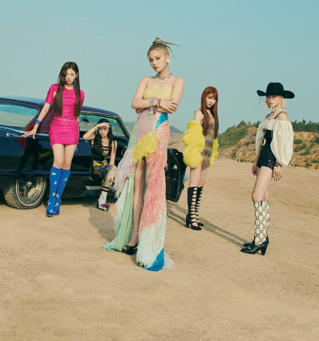
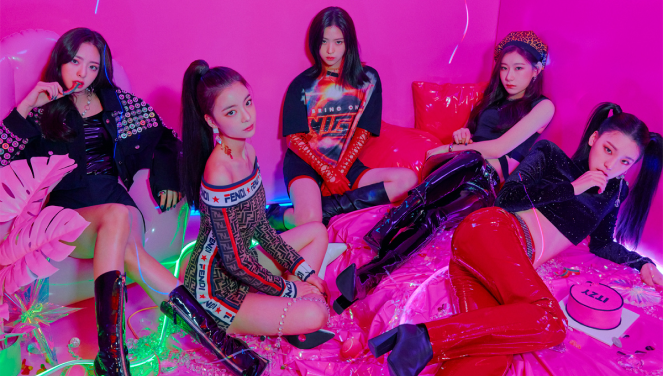
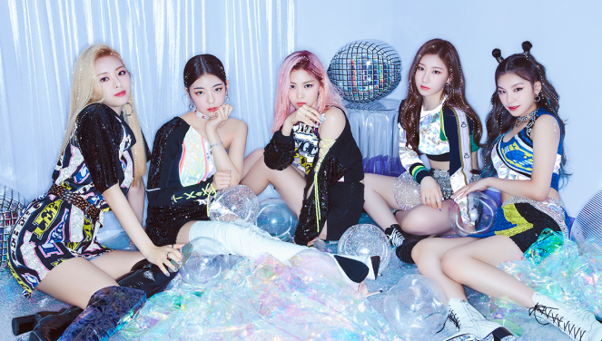
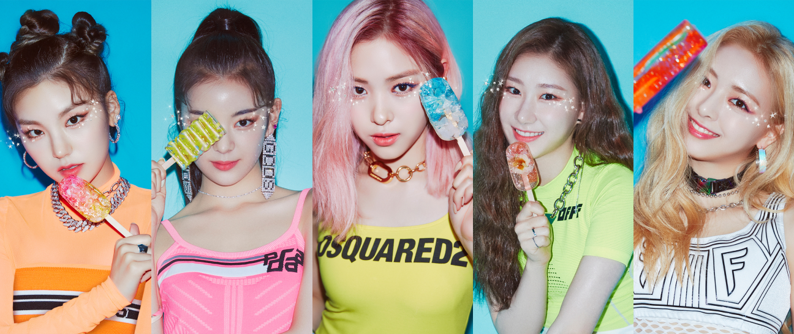
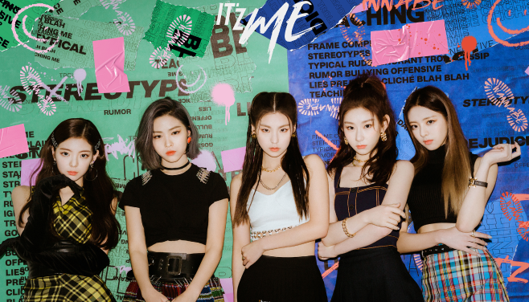
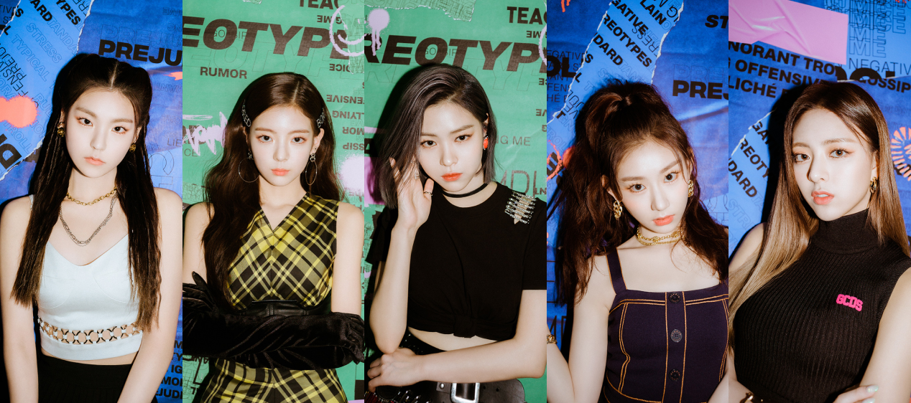

ITZY
LEADING THE KPOP’S 4TH GENERATION DANCE GROUP
ITZY came from JYP Entertainment, the home to one of the biggest names in the industry, Twice. In contrast to their sister group, the girls are the current princesses of the teen crush concept. Singing about being secure in who you are and loving your current self, ITZY are important to the teens of Korea and globally. Debuting under the same agency as one of South Korea’s biggest female exports, there was a sense of pressure for them to live up to JYP’s history of strong girl groups. Only one year into their career. ITZY are carving their own place in JYP history and becoming one of the most exciting groups of the fourth generation of KPOP.
Written by Ellie Nicholas

The Girls Debuted in Year 2019 the month of February with the album IT'z Different
with Dalla-Dalla, the high energy and in-your-face single, they made their mark in the industry by stepping firmly into a solid, powerful, and confident self-love concept. Dalla-Dalla became one of the most loved songs in South Korea of 2019 and solidified ITZY as the top rookie girl group of 2019and solidified ITZY as the top rookie girl group of 2019 (and it was also in our top 10 KPOP songs of the year, FYI.)
ITZY consists of five members: Yeji, Lia, Ryujin, Chaeryeong and Yuna.


Second comeback in the Year 2019 with the album IT'z Icy.
ICY followed up with a similar message of not caring what others think because you know you are IT. As well as becoming South Korea’s beloved rookie girl group, the girls made their mark internationally, being one of the most anticipated acts at the American leg of KCON. Despite only have a 15-minute-long set, the quintet had the crowd hooked from the very get-go.


Entering year 2020, the girl releases IT'z Me Album in the month of March
ITZY brings its self-love message, ‘Wannabe’ has the most attention in YT with 284 million views, it was Produced by Galactika (who also helmed their debut track "Dalla Dalla"), "Wannabe" incorporates similar dance, house and hip-hop elements to create a confident beat for the girls to get down to.The "I wanna be me, me, me" refrain encapsulates their self-love creed they preach to their Midzy fans. "I think the message of loving yourself is really empowering and so many fans relate to that, and I think our performances are a key component to that," Yuna told Billboard in an interview last month.

